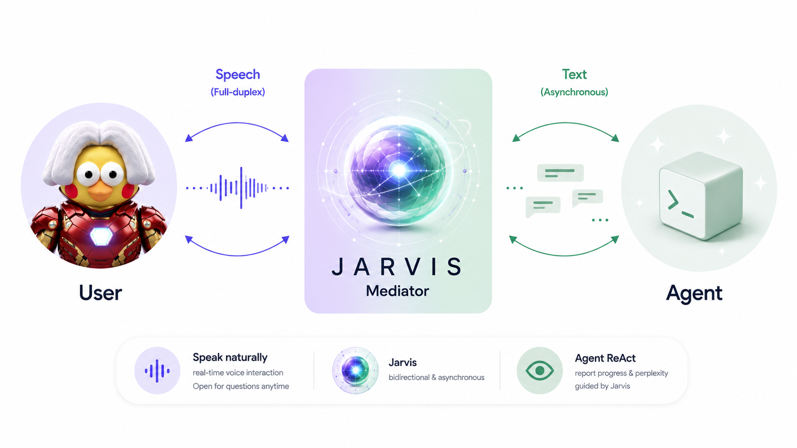

Just A Rather Very Intelligent Spoken Agent
The always-on intelligence between you and your Agent.
- Voice chat anytime. Ask questions or receive proactive progress reports while the Agent works.
- Free your eyes and hands. Jarvis monitors in real time. Put on your headphones and grab a coffee.
- Stay in command. Guide the Agent through conversation. Jarvis delivers your intent at the right moment.

User stays in control
Jarvis stays on call
Agent stays on track
INTRODUCING JARVIS
Why Jarvis?
The motivation behind an always-on spoken mediator, and a brief look at how Jarvis keeps people connected to long-running Agent work.